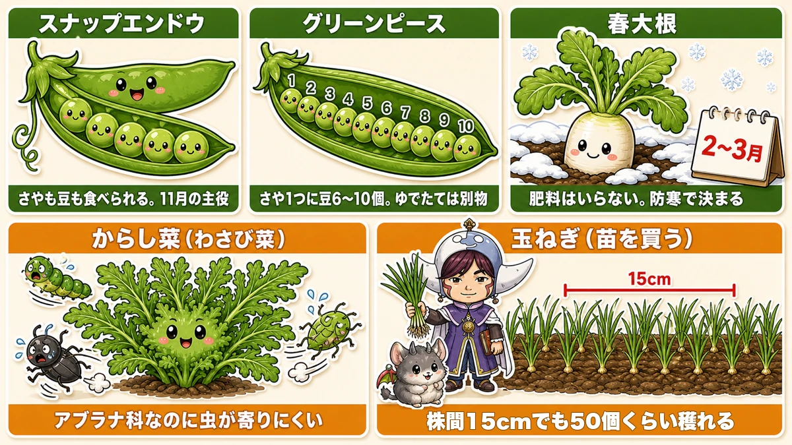
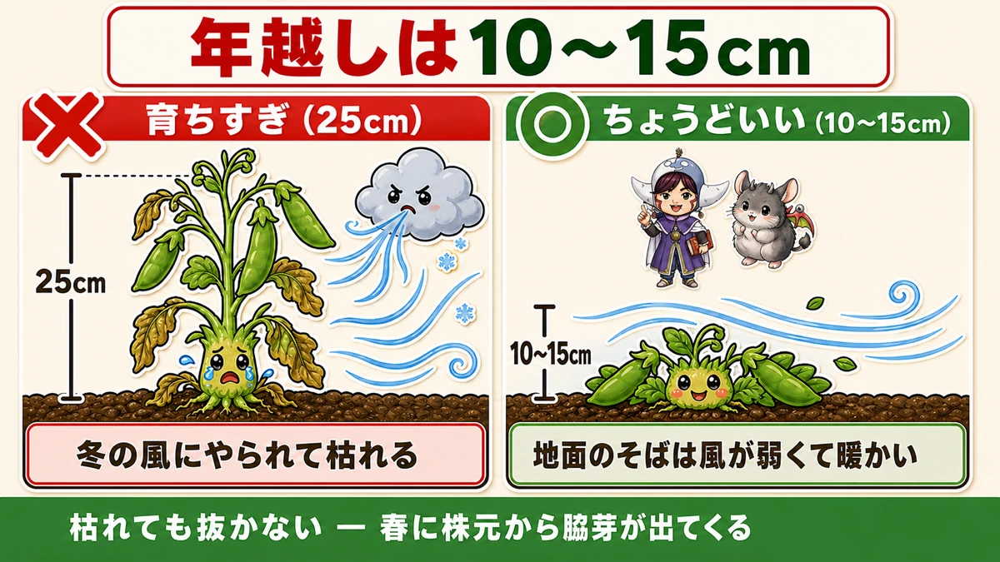
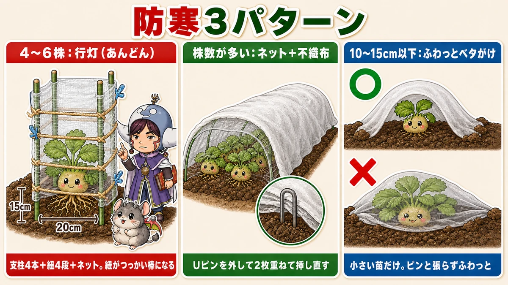
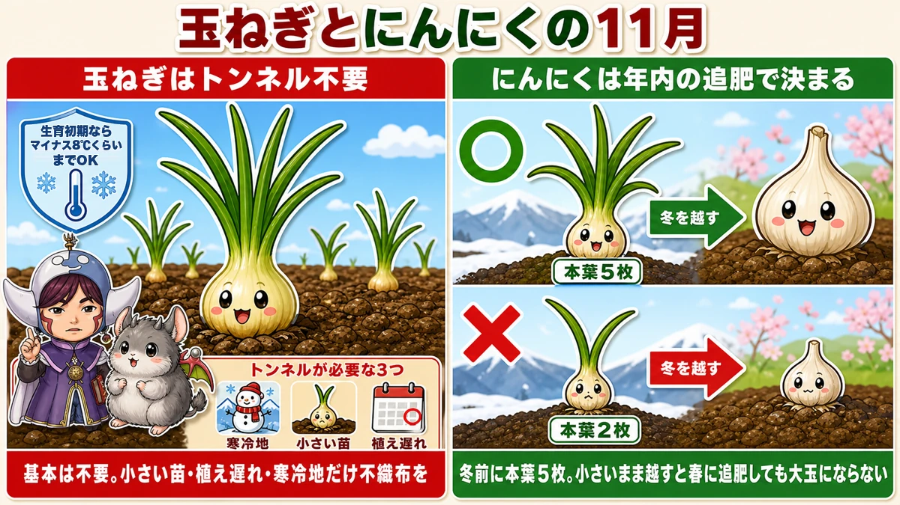
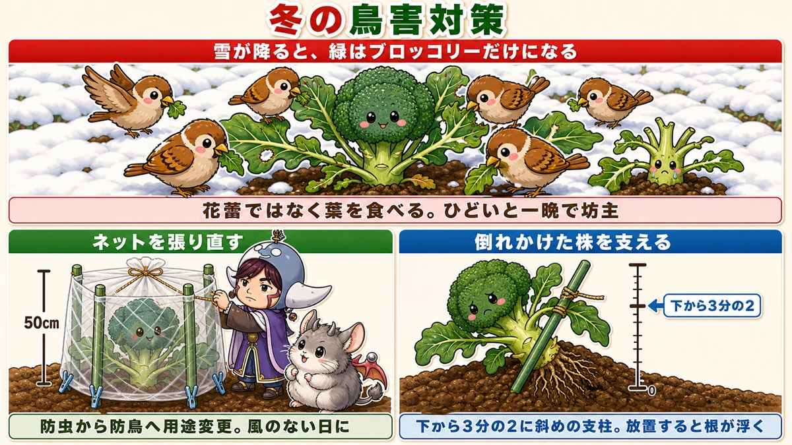

11月にまく・植える野菜｜スナップえんどう・玉ねぎ・春大根、冬を越す株の大きさと防寒、鳥よけ
どうも、8150（えいこう）です🌱 家庭菜園歴8年、理科の教員免許を持っていて、有機・無農薬で野菜を育てています。
📖 この記事の目次
この記事で分かること
- 11月は、春に収穫する野菜を植える時期です。スナップえんどう、グリーンピース、春大根、からし菜、玉ねぎ（苗）などがあります。
- 11月の上旬と下旬では、畑の条件がまるで違います。上旬はまだ暖かい日があり、下旬になると霜が降りはじめます。
- 新しく肥料を入れて分解を待つ時間はもうありません。前の野菜の肥料が残っている「跡地」を使うのがコツです。
- スナップえんどうは、年を越す時点で10〜15cmくらいの小さい苗が、冬を越しやすいと説明されます。大きく育ちすぎた株ほど、冬に傷みやすくなります。
- 防寒のやり方は、株の数で選ぶと迷いません（あんどん、ネットの上に不織布、不織布のベタがけ）。
- 冬は、雪のあとにブロッコリーなどの葉が鳥に食べられることがあります。防虫ネットは外さずに、鳥よけとして張り直します。
- 里芋やさつまいもなど霜に弱いものは、霜が降りる前に収穫します。
11月になると、朝晩の冷え込みがぐっと強くなってきますよね。「もう新しく植えられるものはないかな」と思う方も多いと思います。
でも、11月は、春に収穫する野菜を植えるのにちょうどいい時期です。そして同時に、これから来る冬に向けて、野菜をどう守るかを決める月でもあります。
この記事では、11月にまく・植える野菜と、冬を越すための守り方、すでに育てている野菜の手入れを、順番に書いていきます。説明が分かれているところは、両方の考え方を並べておきますね。
時期は、中間地（関東から関西の平野部）を目安にしています。寒い地域は早めに、暖かい地域は遅めに考えて、タネの袋の時期も確かめてください。

早見：11月の畑の基本（ひと目で分かる目安）
11月にまく・植える野菜
- スナップえんどう：タネまき、または苗を植える。冬を越して春に収穫
- グリーンピース：11月にまいて、6月ごろ収穫する例
- 春大根：11月にまいて、春に収穫（2〜3月の例と、4月から収穫の例がある）
- からし菜（わさび菜など）：冬に向く葉物
- 玉ねぎ：苗を買って植える。株と株のあいだは15cmほど
11月の手入れ
- スナップえんどう・そら豆：大きくしすぎない。防寒の準備
- 玉ねぎ：小さい苗、植え遅れ、寒い地域なら不織布などで守る
- にんにく：冬の前の追肥（本格的な寒さの前に、本葉5枚くらいにしておく）
- ブロッコリーなど：防虫ネットを鳥よけとして張り直す
- 里芋・さつまいも：霜の前に収穫
11月にやらないこと
- 肥料を入れて、すぐタネをまく
- 防虫ネットを、すぐ外す
- 結球中のキャベツや白菜の、外の葉を取る
今月の畑は、こんな状態
上旬と下旬は、別の月と考える
11月は、春に収穫する野菜を植える時期です。ただし、後半になると初霜が降りて、畑の条件が一気に厳しくなります。
11月上旬なら、まだ昼間は暖かい日があるので、タネをまいても意外にうまくいく、と説明されます。中旬以降になると、タネからでは育ちにくくなってくるので、苗を買って植えるほうが確実です。ホームセンターにスナップえんどうやそら豆の苗が並ぶのも、このころからです。
植える場所は「跡地」を使う
11月にいちばん困るのが、土づくりの時間がないことです。
肥料は、土の中で分解されてから効きはじめます。その分解に2週間以上かかる、と説明されます。寒くなると、分解はさらにゆっくりになります。今から肥料を入れて、分解を待って、それから植える、という順番では、もう間に合わないことが多いんです。
そこで使うのが、前の野菜を育てていた場所（跡地）です。9月にまいた野菜や、夏野菜を片づけた場所には、前の野菜のために入れた肥料が残っています。そこに、肥料を入れずにタネをまき、あとから育ち具合を見て追肥で補う、という方法が紹介されています。
「まだ収穫できるけれど、そろそろかな」という野菜を少し早めに片づけて、次の野菜を植える。これが11月のコツです。
地域の気温を見る
同じ11月でも、地域によって気温はかなり違います。暦だけで決めずに、その年の気温を見て判断することも大切です。たとえば、平均気温が14度を下回ってきたら、葉物の畝にビニールトンネルをかける、という目安を使う人もいます。
11月にまく・植える野菜
スナップえんどう
11月の主役です。さやごと食べられて、中の豆も甘い、いいとこどりの野菜です。この時期に植えるのにちょうどいいのは、どうしてもえんどう豆の仲間になる、と説明されます。
スナップえんどうは、冬を越して、春に収穫する野菜です。そのため、冬越しのための防寒が必要になります（あとでくわしく書きます）。
グリーンピース
グリーンピースも、11月にタネをまいて、6月ごろに収穫する例があります。栽培期間は長めですが、収穫したてのグリーンピースは、豆ごはんなどで楽しめます。
春大根
大根は、まく時期によって、収穫の時期が変わる野菜です。11月にまく大根は、春に収穫する「春大根」になります。
春大根の収穫の時期は、説明によって違います。2月から3月にかけて収穫できる、という説明がある一方で、黒マルチやトンネルを使って育て、4月から収穫する、という説明もあります。地域や品種、守り方によって変わるので、タネの袋で確かめてください。
春大根は、寒さから守ってあげるかどうかで、育ち方が大きく変わります。
からし菜（わさび菜など）
からし菜は、冬に向く葉物として紹介されます。ピリッとした辛みのある葉物で、わさび菜もこの仲間です。寒い時期に育てると、甘みも感じられるようになる、という話もあります。
玉ねぎ（苗を植える）
11月の玉ねぎは、タネからではなく、苗を買って植えます。株と株のあいだは15cmほどあければよいので、小さな面積でもたくさん植えられるのが玉ねぎのよいところです。
そのほかの候補
地域によっては、キャベツや白菜の苗、ほうれん草、水菜、かぶなども11月の候補にあがります。寒い時期にタネをまくときは、芽が出にくいので、いつもより少し多めにまく、という説明があります。冬にまいた葉物は、小さめのサイズで収穫することになります。
冬の葉物は、11月中にまき終える
冬に葉物をまくなら、11月中にまき終える、という説明があります。小松菜、春菊、小かぶ、ほうれん草、ラディッシュ、ミニチンゲン菜などは、冬場でも育てられますが、サイズは小さくなります。
寒い時期は芽が出にくいので、いつもより少し多めにまきます。1か所に数粒ずつまく「点まき」なら、1か所に4〜5粒ずつまく例があります。タネをまいたら最初にたっぷり水をやり、芽が出たあとは水をやりすぎないようにします。
ビニールトンネルのかけ方
葉物の保温にビニールトンネルを使うなら、穴のあいた保温用のビニールを使う方法が紹介されています。穴のないビニールを使う場合は、すそを10cmほど開けておいて、中が暑くなりすぎないようにします。暖かい年は、不織布や防虫ネットから始めて、寒くなってきたらビニールに替える、という使い方もあります。

冬を越しやすいのは「小さい株」
ここからが、11月のいちばん大事なところです。
スナップえんどうは、年越しで10〜15cmが目安
スナップえんどうは、11月にタネをまいて、年を越す時点で10〜15cmくらいの苗が、いちばん冬の寒さで傷みにくい、と説明されます。真冬の時点で15cmくらい、という説明もあります。
逆に、大きく育ちすぎた苗は、冬に枯れやすくなります。11月に「よく育っているな」と喜んでいたら、実は伸びすぎていた、ということもあるんです。
そら豆は、20cm以内に抑える
そら豆も、大きくなりすぎると冬に傷みやすくなります。できれば20cm以内、最低でも30cm以内に背丈を抑えるとよい、という説明があります。30cmを超えるほど伸びた苗は、先を摘む（摘心する）対象になります。
スナップえんどうの10〜15cmと、そら豆の20cm以内は、野菜が違う目安です。一つの数字にそろえずに、それぞれの目安として覚えておいてください。
なぜ大きい株は傷みやすいのか
大きく育った株は、背が高いぶん、冷たい風をまともに受けます。茎や葉のやわらかい部分も多くなっています。背の低い小さな株は、地面の近くにいるので、風をよけやすいんですね（あとで「学ぶ」でもう少しくわしく書きます）。
だから、越冬する豆は、早くから暖かくして大きく育てればよい、というわけではありません。暖かくしすぎて苗が大きくなりすぎないように気をつける、という考え方があります。
もう伸びてしまった場合
「うちのはもう20cmを超えている」という場合でも、手はあります。
- 先を摘む（摘心）：これ以上伸びないようにする。伸びすぎたスナップえんどうを摘心した例がある
- そのまま守る：防寒と風よけで、先端を守る
摘心するかどうかは、説明が分かれています（あとで書きます）。
枯れても、すぐに抜かない
長く伸びた茎が寒さで枯れてしまっても、根が生きていれば、株元から新しいわき芽が出てくることがあります。そのわき芽を育てれば、収穫につなげられる、という説明があります。
上のほうが茶色く枯れているのを見ると、もうだめだと思って抜きたくなりますよね。でも、春まで少し様子を見てみてください。
苗を買い直すのもあり
タネまきが遅れたり、失敗したりした場合は、苗を買って植えるのも、もちろんありです。11月中旬ごろから、スナップえんどうやそら豆の苗が売られはじめます。
一緒に植える野菜
豆のまわりに、ほかの野菜を一緒に植える方法もあります。春菊は独特のにおいで虫を遠ざける効果が期待され、ほうれん草や小松菜、ラディッシュは風よけや霜よけになる、と説明されています。

防寒は、株の数で選ぶ
防寒のやり方はいろいろありますが、迷ったら「何株あるか」で選ぶと決めやすくなります。
株が少ないとき：あんどん
株が少ないなら、あんどんでしっかり守れます。
- 150cmくらいの支柱を4本、株のまわりの四隅に立てる
- 下から15cmくらいの間隔で、四隅を囲むようにひもを張っていく
- まわりに防虫ネットを巻いて、留める
- 冷え込む日は、上から不織布をかけて補う
張ったひもは、あとで株が伸びてきたときに、外側に倒れないように支える役目もします。
株が多いとき：ネットの上に不織布
すでに防虫ネットのトンネルをかけているなら、その上から不織布をかぶせる方法が手軽です。新しく支柱を立てる必要がありません。
苗が小さいとき：不織布のベタがけ
苗が小さいなら、不織布を上から直接かけて、ピンで留める方法があります。ピンと張らずに、ふんわりかけるのがポイントです。株が伸びる余裕を残しておきます。
大きく育った株にベタがけすると、布に押されて傷むことがあるので、小さい苗のうちだけの方法と考えてください。
防寒の期間
防寒をする期間の目安は、12月の終わりから2月いっぱい、と説明されます。
資材を重ねる順番
資材を2枚重ねるときは、組み合わせによって上下が変わります。
- 豆の防寒：防虫ネットの上に、不織布を重ねる
- 葉物の保温：ビニールと防虫ネットを重ねるなら、ビニールのトンネルを下にする
ビニールの上に防虫ネットをかけるのは、風でこすれてビニールが破れるのを防ぐため、と説明されます。資材の名前と順番を、取り違えないようにしましょう。

すでに植えたものの、11月の手入れ
玉ねぎ：守るのは、小さい苗と植え遅れ
玉ねぎは、寒さには比較的強い野菜です。ただし、次のような場合は、不織布などで守ってあげるとよい、と説明されます。
- 小さい苗を植えた
- 植えるのが遅れた
- 冬の冷え込みが厳しい地域に住んでいる
約20cmくらいに育った株は、冬越しを優先して、防寒は控えめでよい、という説明もあります。小さい株だけ防虫ネットなどで生育を助ける、という使い分けです。
守る理由のひとつは、霜柱です。小さい苗や、まだ根が張っていない苗は、霜柱に持ち上げられて浮いてしまうことがあります。浮いた苗は、風で飛ばされたり、枯れたりします。朝のうちに霜柱を崩して、株元を押さえてあげましょう。株元にわらやもみ殻を敷くのも、霜柱を防ぐのに役立ちます。
玉ねぎの資材の選び方
- 不織布：光も雨も通すので、かけたままにしやすい。いちばん手軽
- 防虫ネット：それほど寒くない地域なら十分
- ビニール：寒い地域向き。晴れた日は中が暑くなるので、換気が必要
にんにく：冬の前の追肥
にんにくの追肥は、11〜12月と2〜3月の2回、という説明があります。そして、本格的な寒さが来る前に、本葉5枚くらいの大きさにしておくのがポイントだ、と説明されます。
植えるのが遅れた株や、育ちが遅れている株には、11〜12月のうちに追肥をして、不織布のトンネルをかけてあげる方法も紹介されています。
- 追肥の前に、草取りをしておく
- 株元やマルチの穴に、肥料を軽くひとつまみずつ入れる
- 粒が丸く固まった（ペレット状の）肥料のほうがまきやすい
- 追肥のあと、土を軽くかける
そら豆は、順調なら追肥しない
一方、順調に育っているそら豆には、よほどでない限り冬の追肥はしない、という説明があります。同じ冬でも、にんにくとそら豆では、肥料の考え方が違うんですね。「冬は追肥しない」「冬の前は必ず追肥」のように、すべての野菜に同じルールを当てはめないようにしましょう。
いちごの冬越し
いちごは、11月の後半に植えるのは少し遅い可能性がある、と説明されます。これから苗を買うなら、株が大きく、中心の芽の部分（クラウン）がしっかりしたものを選びます。
冬のあいだは、霜柱で株が持ち上げられて、根が出てしまうことがあります。そのときは土を戻しますが、クラウンの部分は土に埋めないように気をつけます。枯れた葉は、無理に取らずにそのままにしておき、暖かくなる2月後半から取り除く、という説明があります。水やりは、11月後半から2月中旬くらいまでは、ほとんど必要ないと説明されます。肥料も、1月に入ってから追肥すれば十分間に合う、という説明です。
にらの冬越し
にらは、一度植えれば何年も収穫できる野菜です。冬に土が凍る地域では、根が傷んで翌年育たなくなることがあるので、年末ごろに不織布をかけておく、という方法が紹介されています。不織布がなければ、落ち葉をかぶせておくのでもよい、という説明です。
にんにくの脇芽と、玉ねぎの土寄せ
にんにくは、植えてから1か月くらいたつと、1か所から芽が2つ、3つと出てくることがあります。栄養が分かれてしまうので、余分な芽は根元からはさみで切ります。引き抜くと、残したい芽まで傷めてしまうので、抜かないように、と説明されます。
玉ねぎは、植えてから1〜2週間たって、苗がぐらぐら揺れているようなら、白い部分を埋めない程度に土を寄せて、もう一度押さえておきます。11〜12月は、玉ねぎやにんにくに基本的に水やりはいりません。寒い時期に水をやると、かえって土や根が冷えてしまうことがある、と説明されます。
アブラムシは、葉の裏で冬を越す
寒くなって、新しい芽の先からアブラムシの姿が見えなくなっても、白菜や大根の、マルチに近い葉の裏でかたまって冬を越していることがある、と説明されます。冬のあいだは目立ちませんが、2月の後半くらいから暖かくなると、急に増えはじめます。
葉の裏や、そら豆の新しい芽の先をときどき見て、見つけたら取り除いておきましょう。
秋じゃがいもは、守れば長く育つ
秋に植えたじゃがいもは、11月中旬以降の冷え込みで葉が枯れると、いもが太るのが止まってしまいます。防虫ネットやビニールのトンネルをかけて、葉を枯らさずに育つ期間を延ばす、という方法が紹介されています。
ただし、11月初めはまだ暖かい日もあるので、ビニールだと中が暑くなりすぎることがあります。途中からでも、黒いマルチ、わらのマルチ、不織布などで株を守る方法があります。保温の力は、ビニールのマルチ、わらのマルチ、不織布の順に強い、という説明です。
収穫は、葉が完全に枯れてから行います。少し黄色くなったくらいで掘らないように、と説明されます。
9月にまいた野菜は、とり遅れに注意
暖かい秋には、9月にまいたかぶや大根、小松菜、水菜などが、思ったより早く育つことがあります。収穫の時期を逃さないように気をつけましょう。大根は、収穫に適した大きさになってから、畑に置いておけるのは1週間から10日くらい、という説明があります。そのまま置いておくと、だんだん固くなっていきます。
アブラムシの卵を減らす
冬のあいだに、空いた畝を深く耕して土を上下に返しておくと、土の中のアブラムシの卵などを減らせる、という提案もあります。また、使い終わったマルチをはがしておくと、アブラムシが冬を越す場所を減らせます。アブラムシがついていた野菜の残りは、畑に置いたりすき込んだりせずに、片づけておきましょう。

冬は、鳥がやってくる
雪のあとに、葉を食べられる
ブロッコリーやカリフラワーが大きくなってくると、防虫ネットに収まりきらなくなりますよね。虫も減ってきたし、そろそろ外そうかな、と思う方も多いと思います。
でも、12月から1月、特に雪が降ったあとは、鳥が集団でやってきて、葉を食べてしまうことがある、と説明されます。畑が雪で白くなると、鳥にとって食べ物が少なくなります。そんな中で、緑の葉は目立ってしまうんですね。
葉を食べられた株は、光合成ができなくなり、その後の育ちが悪くなります。
ネットは、外さずに張り直す
防虫ネットは外さずに、鳥よけと風よけのために張り直します。
- 50cmくらいの支柱を4本、株を囲むように、作物より高く立てる
- まわりに防虫ネットを巻きつける
- 洗濯ばさみで留め、上はひもでまとめる
ネットの作業は、風のない日に行うと楽です。
倒れかけた株を起こす
秋の風で傾いてしまった株は、そのままにしておくと、さらに強い風で根が浮いたり、茎が折れたりします。
- 無理のない範囲で、株を起こす
- 支柱を斜めに差して、株を支える
- ひもで結ぶ。きつく縛らず、少しゆとりを持たせる
茎ブロッコリーを育てている場合は、てっぺんのつぼみ（頂花蕾）が直径4cmくらいになったら切ると、わき芽が出てくる、という説明があります。
11月にやってはいけないこと
肥料を入れて、すぐタネをまく
肥料の分解には2週間以上かかります。寒くなると、さらに遅くなります。11月は、肥料が残っている跡地に、肥料を入れずにタネをまき、あとから育ち具合を見て補う、という順番がおすすめです。
防虫ネットを、すぐ外す
野菜がネットにつっかえてきても、すぐには外さないでください。虫はまだ活動していますし、このあと鳥もやってきます。外すのではなく、ゆるめるか、支柱を足して高さを出してあげましょう。
結球中の外の葉を取る
キャベツや白菜の外側の葉が地面についていると、取りたくなりますよね。でも、育っている途中の外の葉は、結球（葉が巻いて玉になること）のために働いています。取ってよいのは、黄色くなった葉だけです。
霜の前に収穫しておくもの
大根
大根は、11月から12月初めが収穫のおすすめの時期、という説明があります。冬を越すと、中にすが入って、水分が抜けてしまうことがあります。
玉レタス
かたく結球したら、早めに収穫します。
里芋・さつまいも・しょうが
さつまいもやしょうがは、霜に弱いので、霜が降りる前に収穫するのが基本です。さつまいもは、収穫が間に合わない場合、株元でつるを切って、いもと葉を切り離しておく、という方法も紹介されています。
里芋は、霜が降りると傷むので11月中旬までに収穫する、という説明がある一方で、霜で地上の葉が枯れても、土の中の芋はすぐには傷まない、という説明もあります（あとで書きます）。
初霜の時期を調べておく
初霜の時期は、地域によって違います。11月の初めごろに霜が降りる地域もあれば、11月下旬になる地域もあります。住んでいる地域の、例年の初霜の時期を調べておくと、収穫や防寒の準備がしやすくなります。最低気温が低く、夜に風がなく晴れていると、霜が降りやすくなる、と説明されます。
失敗の見分け方
スナップえんどうが、冬のあいだに枯れた
11月のうちに大きく育ちすぎていた可能性があります。次の年は、まく時期を少し遅らせて、年越しで10〜15cmくらいになるようにしてみてください。枯れた株も、根が生きていれば株元からわき芽が出ることがあるので、春まで様子を見ましょう。
玉ねぎの苗が、浮いて倒れていた
霜柱で持ち上げられた可能性があります。苗を植え直し、株元を押さえて、まわりに土を寄せてください。株元にわらやもみ殻を敷くと、霜柱が立ちにくくなります。
ブロッコリーの葉が、一晩で穴だらけになった
鳥に食べられた可能性があります。株を囲むようにネットを張って守りましょう。
11月にまいた葉物が、なかなか大きくならない
寒い時期は、育つのがとてもゆっくりです。不織布やビニールで保温すると、育ちが進みます。冬にまいた葉物は、小さめのサイズで収穫すると考えておきましょう。
冬にまいた葉物に、春になって花芽がついた
冬にまいた葉物は、春が来る前に収穫しないと、とう立ち（花の茎が伸びること）してしまうことがある、と説明されます。1〜2月に収穫できるものは、早めに収穫しておきましょう。
説明が分かれていること
伸びすぎたスナップえんどうを、摘心するか
- 伸びすぎた株を摘心し、枯れた場合は株元のわき芽を育てる、という説明
- 主なつるの収穫量を大切にして、伸びすぎても防寒・防風で先を守り、原則として切らない、という説明
同じチャンネルの中でも、方針が分かれています。救いの手としての摘心と、主なつるを残す方針、どちらもあると考えてください。
春大根の収穫時期
- 2月から3月に収穫できる、という説明
- 黒マルチやトンネルで守って、4月から収穫できる、という説明
地域、品種、守り方、まく時期で変わります。
植える前に肥料を入れるか
- 葉物や春大根は、肥料が残っている跡地に、肥料を入れずにまく、という説明
- 玉ねぎを植える前に、肥料などを入れる、という実例
野菜と、畑のこれまでの使い方が違う話です。葉物の跡地のやり方を、玉ねぎの新しい畝にそのまま当てはめないようにしましょう。
豆に肥料はいるか
- 豆は根粒菌の力で窒素を取り込むので、窒素の肥料はいらない、という説明
- そら豆の大きなさやと豆を育てるには、肥えた土や追肥が必要、という説明
豆の種類や、畑の状態で変わります。「豆には肥料が一切いらない」とは考えないほうが安心です。
霜のあとの芋
- 里芋やさつまいもは、霜が降りると傷むので、早めに収穫する、という説明
- 秋じゃがいもや里芋は、霜で地上の葉が枯れても、芋自体はすぐには傷まない、という説明
葉が霜で枯れることと、土の中の芋が傷むことは、同じではありません。ただし、年明けの強い寒さは、芋が傷む原因になる、とも説明されます。
玉ねぎの「ちょうどよい温度」
- 玉ねぎの育つのに適した温度は15〜20度、という説明
- 15〜23度、という説明
- 25度以上になると、育ちが悪くなる、という説明
数字には幅がありますが、玉ねぎは暑さより涼しさを好む野菜だ、という点は共通しています。秋に植えて、春に育てる野菜なんですね。
よくある質問
Q. 11月中旬を過ぎてしまいました。まだ何か植えられますか？
A. タネからでは育ちにくくなってくるので、スナップえんどうやそら豆、玉ねぎなどは、苗を買って植えるのが確実です。葉物は、不織布やビニールで保温すれば、小さめのサイズで収穫できることがあります。
Q. 防寒は、いつから始めればいいですか？
A. 目安は、12月の終わりから2月いっぱいです。早くから暖かくしすぎると、豆の苗が大きくなりすぎてしまうことがあります。資材の準備は11月のうちに済ませておき、本格的な寒さに合わせてかけるとよいでしょう。
Q. 不織布とビニール、どちらを使えばいいですか？
A. 不織布は、光や雨を通すので、かけたままにしやすいのが長所です。ビニールは保温の力が強いかわりに、晴れた日は中が暑くなるので換気が必要です。中間地なら不織布、寒い地域ではビニールを使う、という使い分けが分かりやすいと思います。
Q. 玉ねぎの苗が、細くて小さいものしか手に入りませんでした
A. 小さい苗は、霜柱で浮いたり、寒さで傷んだりしやすいので、不織布や防虫ネットで守ってあげてください。株元にわらやもみ殻を敷くのも効果があります。
Q. にんにくの追肥は、どれくらいの量ですか？
A. 株元に軽くひとつまみずつ、という説明があります。量は使う肥料によって違うので、肥料の袋の説明も確かめてください。草取りをしてから追肥し、そのあと軽く土をかけておきましょう。
Q. 冬にまいた葉物の水やりは？
A. タネをまいたときにたっぷり水をやったら、芽が出たあとは水をやりすぎないようにします。冬に水をやりすぎると、根が傷んだり、土が冷えたりする、と説明されます。
Q. もみ殻は、どこで手に入りますか？
A. 米農家さんや、精米所、ホームセンターなどで手に入ることがあります。もみ殻は分解されにくく、すき間が多いので、株元に敷くと保温や保湿、霜柱の対策に役立つ、と説明されます。
Q. 鳥よけのネットは、いつまで張っておけばいいですか？
A. 鳥の被害が出やすいのは、12月から1月、特に雪のあとです。収穫が終わるまで張っておくと安心です。強い風でネットが飛ばされないよう、ときどき留め具を確かめてください。
Q. 11月の後半に大根をまいても育ちますか？
A. 11月にまくなら、なるべく上旬に、という説明があります。後半にまくと、3月に小さいまま花の茎が伸びてしまう（とう立ちする）ことがあるので、ビニールトンネルでの防寒を忘れないように、と説明されます。小型の品種を選び、大きく育つことは期待しすぎないほうが安心です。
学ぶ🔬 冬の野菜で起きていること
ここからは、冬の野菜で起きていることのしくみを、少しだけ深く書いておきます。読み飛ばしても大丈夫です。
地面の近くは、風が弱い
風は、地面から高いところほど強く吹き、地面の近くでは、地面とのこすれで弱くなります。背の低い株は、この風の弱いところにいるので、冷たい風の影響を受けにくくなります。
さらに、昼のあいだに日光で温まった土は、夜になると少しずつ熱を出していきます。地面にへばりつくように育っている小さな株は、このわずかな熱も受け取りやすい位置にいます。小さい株が冬を越しやすい理由のひとつは、この「位置」にあると考えられます。
冷たい風は、葉の水分をうばう
冬の風は乾いています。乾いた風が葉に当たると、葉から水分が出ていきやすくなります。一方、冬の冷たい土の中では、根が水を吸う力が落ちています。出ていく水と、入ってくる水のバランスがくずれると、葉が傷んでしまいます。
あんどんやネットで囲んで風をやわらげるのは、寒さをやわらげるだけでなく、この水分のバランスを守る意味もあるんですね。
霜柱は、なぜ苗を持ち上げるのか
冬の夜、地面の表面が冷えて凍ると、土の中の水分が、土のすき間を伝って表面に吸い上げられ、次々に凍って、細い氷の柱になっていきます。これが霜柱です。
霜柱が伸びるとき、表面の土も一緒に持ち上げられます。植えたばかりで根が浅い苗は、土と一緒に持ち上げられて、根が浮いてしまうんです。株元にわらやもみ殻を敷くと、地面が冷えにくくなって、霜柱が立ちにくくなります。
肥料は、なぜ分解を待つ必要があるのか
鶏ふんや油かすなどの有機の肥料は、土の中の小さな生きもの（微生物）が分解してはじめて、野菜が吸える形になります。分解の途中では、熱やガスが出ることがあり、そこに根やタネがあると傷むことがあります。
微生物は、寒いと働きがゆっくりになります。だから、寒くなる11月は、分解にさらに時間がかかります。前の野菜の肥料がすでに分解されて残っている跡地を使うのが、11月にはちょうどいい、というわけです。
もみ殻が、霜柱と乾燥を防ぐしくみ
もみ殻は、お米の外側をおおっていた殻です。分解されにくく、中にすき間が多いのが特徴です。
株元にもみ殻を敷くと、すき間にふくまれた空気が、毛布のように地面の熱を逃がしにくくします。そのため、地面が冷えにくくなり、霜柱が立ちにくくなります。また、土の表面から水分が蒸発するのもやわらげてくれます。
にんじんや玉ねぎ、ねぎなどのタネをまいたあとに、もみ殻を薄くまいておくと、土の乾燥を防いで、芽が出やすくなる、という使い方も紹介されています。
まとめ
ここまで読んでくださって、ありがとうございます！
11月の畑のポイントを、もう一度まとめておきます。
- 11月は、春に収穫する野菜を植える月。上旬と下旬で条件が違う
- 肥料を入れる時間はないので、肥料が残っている跡地を使う
- スナップえんどうは年越しで10〜15cm、そら豆は20cm以内が目安。大きくしすぎない
- 伸びすぎたら摘心か、防寒で守る。枯れてもすぐには抜かない
- 防寒は株の数で選ぶ。少ないならあんどん、多いならネットの上に不織布、小さい苗ならふんわりベタがけ
- 玉ねぎは小さい苗・植え遅れ・寒い地域だけ守る。霜柱で浮いた苗は押さえる
- にんにくは、本格的な寒さの前に追肥して、本葉5枚くらいに
- 防虫ネットは外さずに、鳥よけとして張り直す
- 里芋、さつまいも、しょうがは霜の前に収穫
11月は、植える月であり、冬の守り方を決める月です。寒さが本格的になる前に、資材の準備だけでも済ませておくと安心です。
まずは、スナップえんどうやそら豆の背丈を、ものさしで測ってみてください
スナップエンドウのタネ（つるなしホルンスナック）
11月の主役です。つるなしなので支柱4本で済み、草丈1mほど。子どもと一緒に穫れる高さなのがうれしいところです。年末に10〜15cmを目指してまいてください。
![[商品価格に関しましては、リンクが作成された時点と現時点で情報が変更されている場合がございます。]](https://hbb.afl.rakuten.co.jp/hgb/552615f0.9cc2855e.552615f1.776f7de9/?me_id=1251188&item_id=10000610&pc=https%3A%2F%2Fthumbnail.image.rakuten.co.jp%2F%400_mall%2Fyonezawa%2Fcabinet%2Ftane01%2F10mame%2Fhorunsnack.jpg%3F_ex%3D240x240&s=240x240&t=picttext "[商品価格に関しましては、リンクが作成された時点と現時点で情報が変更されている場合がございます。]")

そら豆のタネ（駒栄）
秋まき用。11月はじめまでにまいて、小さいまま冬へ。玉ねぎと隣り合わせに植えると、春にお互いを助け合います。
![[商品価格に関しましては、リンクが作成された時点と現時点で情報が変更されている場合がございます。]](https://hbb.afl.rakuten.co.jp/hgb/56d217e1.4eab06f8.56d217e2.1513a8ec/?me_id=1204270&item_id=10005616&pc=https%3A%2F%2Fthumbnail.image.rakuten.co.jp%2F%400_mall%2Fnikkoseed%2Fcabinet%2Fseeds%2Fssk%2Fsskv1088h4701.jpg%3F_ex%3D240x240&s=240x240&t=picttext "[商品価格に関しましては、リンクが作成された時点と現時点で情報が変更されている場合がございます。]")
玉ねぎ苗（中晩生 ネオアース）
11月は苗を買って植える月です。株間15cmでびっしり植えられるので、狭い畑でも50個以上穫れます。中晩生は保存がきくのがありがたいです。
![[商品価格に関しましては、リンクが作成された時点と現時点で情報が変更されている場合がございます。]](https://hbb.afl.rakuten.co.jp/hgb/56d218b8.a80573a6.56d218b9.1d398fba/?me_id=1241438&item_id=10055324&pc=https%3A%2F%2Fthumbnail.image.rakuten.co.jp%2F%400_mall%2Fnogyoya%2Fcabinet%2F03498327%2Fimg60507283.jpg%3F_ex%3D240x240&s=240x240&t=picttext "[商品価格に関しましては、リンクが作成された時点と現時点で情報が変更されている場合がございます。]")
不織布
防寒の3パターンすべてで使います。換気がいらないので、かけっぱなしにできるのがいちばんの利点。玉ねぎにも豆にも、これ1つで足ります。
![[商品価格に関しましては、リンクが作成された時点と現時点で情報が変更されている場合がございます。]](https://hbb.afl.rakuten.co.jp/hgb/56bc237a.e97551b1.56bc237b.2513ed10/?me_id=1310260&item_id=10000879&pc=https%3A%2F%2Fthumbnail.image.rakuten.co.jp%2F%400_mall%2Fdiokasei%2Fcabinet%2F007fusyokufu%2F12g%2Fimgrc0092049705.jpg%3F_ex%3D240x240&s=240x240&t=picttext "[商品価格に関しましては、リンクが作成された時点と現時点で情報が変更されている場合がございます。]")
支柱（150cm）
行灯（あんどん）を作るのに、株を囲んで4本立てます。紐を4段張れば、防寒と支柱を兼ねてくれます。
![[商品価格に関しましては、リンクが作成された時点と現時点で情報が変更されている場合がございます。]](https://hbb.afl.rakuten.co.jp/hgb/56d221a0.da732c49.56d221a1.b57a6709/?me_id=1230952&item_id=10017113&pc=https%3A%2F%2Fthumbnail.image.rakuten.co.jp%2F%400_mall%2Fnou-nou%2Fcabinet%2F5010356000109-01.jpg%3F_ex%3D240x240&s=240x240&t=picttext "[商品価格に関しましては、リンクが作成された時点と現時点で情報が変更されている場合がございます。]")
炭化鶏ふん
にんにくの年内追肥に使います。鶏ふんはリン酸が多くてにんにくと相性がよく、これが冬前の本葉5枚を作ります。粒状なのでまきやすいです。
![[商品価格に関しましては、リンクが作成された時点と現時点で情報が変更されている場合がございます。]](https://hbb.afl.rakuten.co.jp/hgb/55e7612a.7de1526b.55e7612b.01a50904/?me_id=1214866&item_id=10002182&pc=https%3A%2F%2Fthumbnail.image.rakuten.co.jp%2F%400_mall%2Fkaju%2Fcabinet%2F00714580%2F03462454%2F07486601%2Fimgrc0071643813.jpg%3F_ex%3D240x240&s=240x240&t=picttext "[商品価格に関しましては、リンクが作成された時点と現時点で情報が変更されている場合がございます。]")
あわせて読みたい